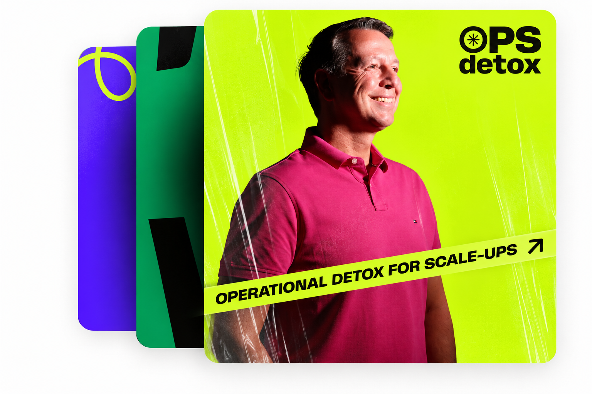

Takes 6-8 minutes
Short enough to finish in one sitting, long enough to be honest.
Find out where your organization is losing time, clarity and execution speed. A full diagnostic of your operational friction — the same diagnostic Oscar runs at the start of every OPS Detox engagement.

Short enough to finish in one sitting, long enough to be honest.
You see which part of the operation is clogged, not just that something is.
Plus a personal copy of the results emailed to you.
Every layer of your organization lives in a different version of reality. Measure one viewpoint and you measure one blind spot. The wider the gap, the larger the hidden friction.

Question 1 of 7
Loading…
Answers stay in your browser. Nothing is submitted.
Demo version. The seven statements and the scoring here are placeholders built to show the flow — final questions, scoring and the emailed result come from the diagnostic platform once it is chosen.